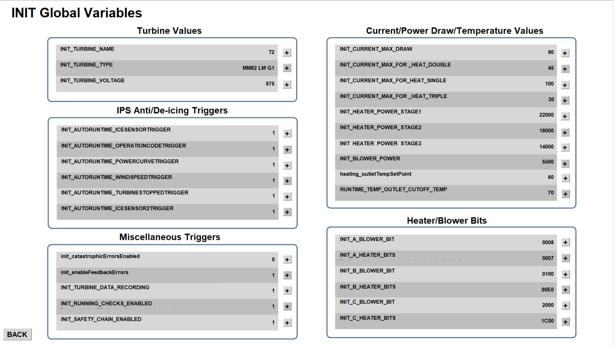
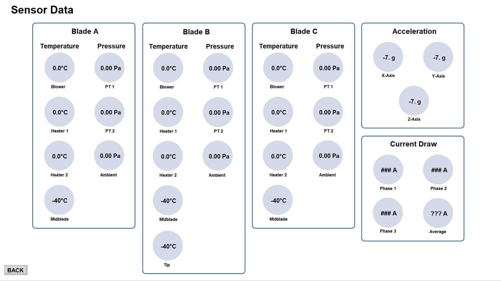
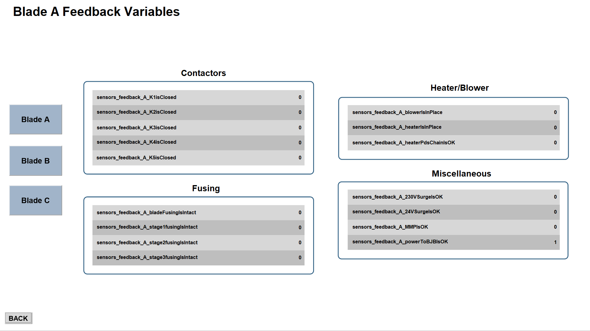
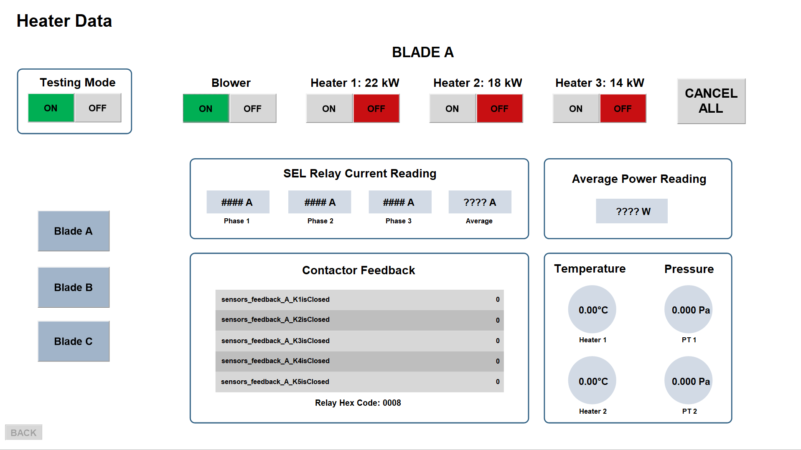
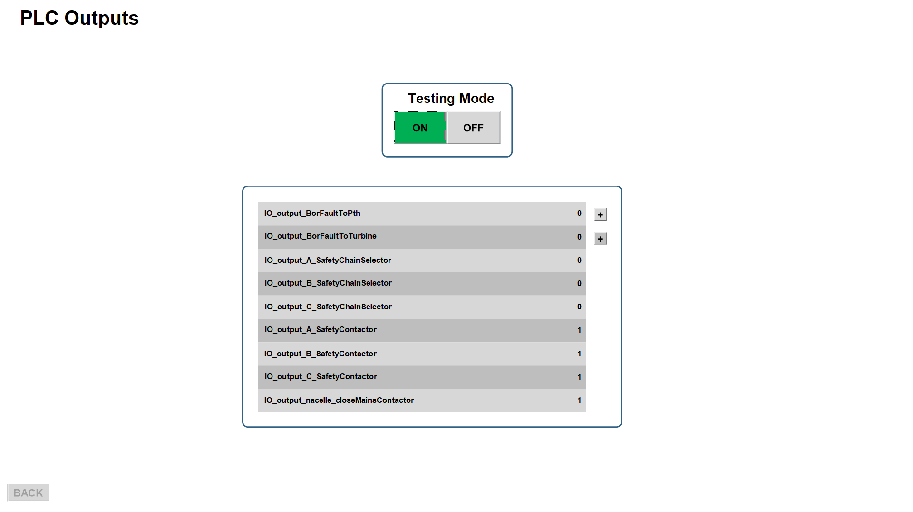

This case study outlines the design of a user interface to be used for commissioning the ice protection system created by Borealis Wind. This user interface is used to allow installation technicians to configure Borealis' system when performing installs within wind turbines.
When Borealis Wind installs their system within wind turbines, the control system must be commissioned, which refers to the process of bringing the system to a working condition. The commissioning process was initially completed by the Borealis Wind engineering team, however with company growth, employees will be hired on to be responsible for installation and commissioning. Currently, commissioning takes place by accessing the code used to program the IPS. It is not good practice to allow people outside of the core engineering team to have access to this code, as this can compromise the company’s patented design and security of the system. Therefore, a way to complete the commissioning process through a user interface, without requiring access to the code, is necessary.
The primary user of the designed interface will be installation technicians. Secondary users include the Borealis Wind team, as well as windmill technicians employed at wind farms.
For this project, I had complete ownership over identifying and scoping the requirements and constraints, the usability goals, the interface design process, the backend development, and usability testing. The engineering team at Borealis Wind was consulted for design feedback and testing purposes.
The project scope was first defined by outlining usability metrics, to be used to evaluate the final design. These metrics were proposed to the engineering team, and were finalized to be:
Effective
The effectiveness of the commissioning UI shall not be less than 80%
Satisfying
The commissioning UI shall have an overall single ease question (SEQ) score
of at least 5.9
Error Tolerant
The commissioning UI shall reflect 100% of configured values for the
user to confirm that values have been successfully changed
Easy to learn
Users will be able to use the commissioning UI while consulting the user
manual for 20% of tasks
Efficient
Users will be able to navigate to desired locations of the commissioning UI
within 60 seconds
Usable
The system usability scale (SUS) for the commissioning UI shall have a score of at least 70
As well, functional requirements for what the commissioning UI must include were defined through discussion with the engineering team. These requirements included aspects such as allowing configurability of various variables, displaying system outputs, and showing system errors.
The first step to the design process was to prioritize the functional requirements, to ensure that the most important requirements were completed first. This was completed using a weighted decision matrix, with 3 criteria that each requirement was weighted against. These criteria were, "Frequency of problem that this requirement addresses", "Time required to use initial method", and "Value of requirement for troubleshooting". With the results from the matrix, the requirements that scored the highest were integrated first.
Next, Figma was used to wireframe the design, and explore the implementation of interface design principles. Interaction design was explored through means of Fitt's Law and implementing clues regarding user behaviour. Fitt's law was implemented by utilizing the edges of the screen to house the "back" and "logout" buttons for the design. Clues were implemented to assist in user behaviour, as descriptive titles were given to any area that required the user to input data. Visual design was implemented to create an effective user interface design. The aspects of visual design that were touched on was unity, white space, and hierarchy. Unity was achieved, as design continuity was applied throughout the different pages of the UI, making each aspect look as through it belonged. To promote white space, clutter was avoided on each page, keeping the design minimal and readable. Lastly, hierarchy was implemented with using bigger fonts for page titles and section headings, and smaller fonts for instructions and page information.
Once the wireframe had been discussed with the engineering team, and feedback was given for areas that could be refined, the interface was prototyped in Indusoft Web Studio. The home screen is shown first, which includes areas where active errors can be displayed, and buttons to navigate to other pages.
When the "INIT Global Variables" button is pressed, the screen below appears. This page outlines several variables, which can be configured by pressing the "+" button. Note that sensitive information has been removed for this page.
From the home page, the following window appears when the "Sensor Data" page is pressed. This page displays temperature and pressure readings that are found throughout the wind turbine.
The next button shown on the home page, "Feedback Variables", opens the page shown below. This is another page that shows particular variables, and allows for them to be configured. Navigation between blade information can take place using the menu on the left.
The "Heater Data" button shown on the home page opens the page shown below. This page allows the system's heaters to be activated and tested, with corresponding data shown on the page.
Lastly, the "PLC Outputs" button opens the page shown below, which displays other variables. Some of these variables can be configured, which is completed by pressing the "+" button beside it.
Design validation took place by testing the functions within the user interface, to ensure that a success rate of 100% for all functional requirements. Design verification took place in the form of usability testing, utilizing a design walkthrough. Participants of varying commissioning experience were recruited, and each were independently taken through a series of 6 tasks. The users were instructed to complete each task one at a time within the commissioning UI, and the success of completion was recorded, as well as the task time. After each task, the user was also requested to fill out a SEQ response, which had the question "How difficult or easy did you find the task?", with a scale of 1 - 7 for their input. After testing was completed, each user filled out a SUS response, which contained a series of 10 questions, each with a rating input.
The results from the validation of the functional requirements were that each of the requirements performed at a 100% success rate. From the verification of usability goals, it was determined that the effectiveness scored at 100%, the SEQ score was 6.83, the error tolerance scored at 100%, use of the commissioning manual was 0%, all task times fell below 60s, and the SUS score was 98.3. Thus, it can be seen that all usability benchmarks were met and exceeded. Going forward, it would be beneifical to recruit target end users for the usability testing, to get the most accurate representation for test results. This could not be completed during my time at Borealis Wind, but would be a recommendation for continued project development.